Medida de Continuidade
Definição:
A medida de continuidade é um teste que verifica se existe um caminho elétrico fechado entre dois pontos de um circuito, sendo feito com um multímetro que indica passagem de corrente por sinal sonoro ou valor próximo de zero ohms, e quando não há, aponta circuito aberto e possíveis falhas como fios rompidos ou conexões inadequadas.
Símbolo de Medida de Continuidade:

Multímetro
Definição:
É um instrumento de medição portátil usado para medir grandezas elétricas como tensão (voltagem), corrente (amperagem) e resistência (ohms).
Imagem:

Sensor ultrassônico
Definição:
Um sensor ultrassônico é um dispositivo que mede distâncias ou detecta a presença de objetos emitindo ondas sonoras de alta frequência (ultrassom), inaudíveis aos humanos.
Ele calcula o tempo que o eco da onda leva para ir e voltar de um objeto, funcionando independentemente da cor, transparência ou luz.
Imagem:
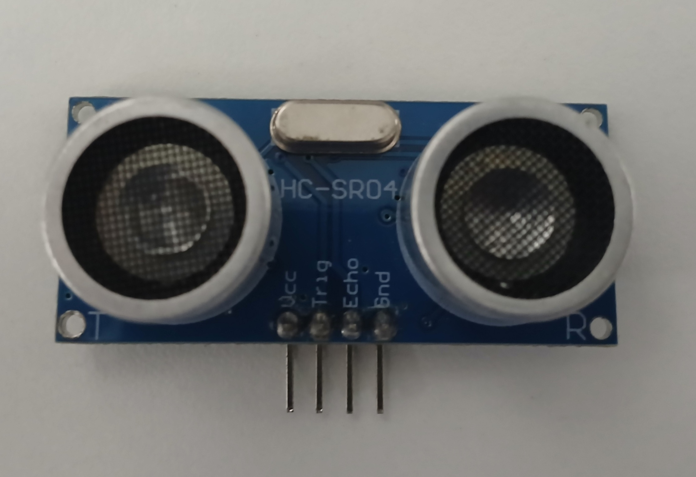
Circuito Tinkercad (1 Resistor, 1 Sensor Ultrassônico e 1 LED) - Se detecta um objeto, acende o LED (Início de detecção - 20 cm / Fim de detecção - 200 cm)
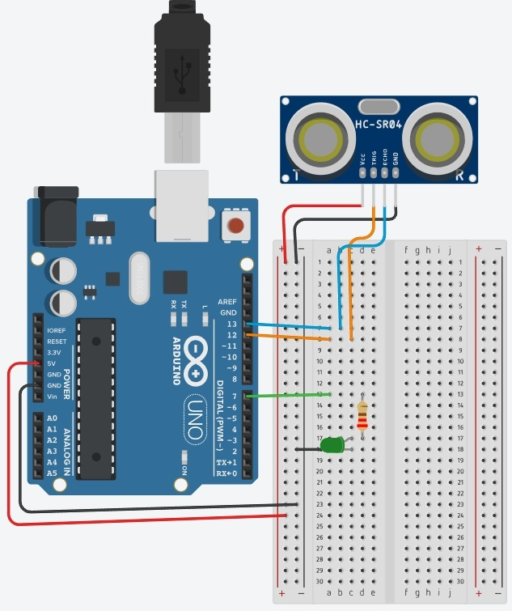
Circuito Físico (1 Resistor, 1 Sensor Ultrassônico e 1 LED) - Se detecta um objeto, acende o LED (Início de detecção - 20 cm / Fim de detecção - 200 cm)
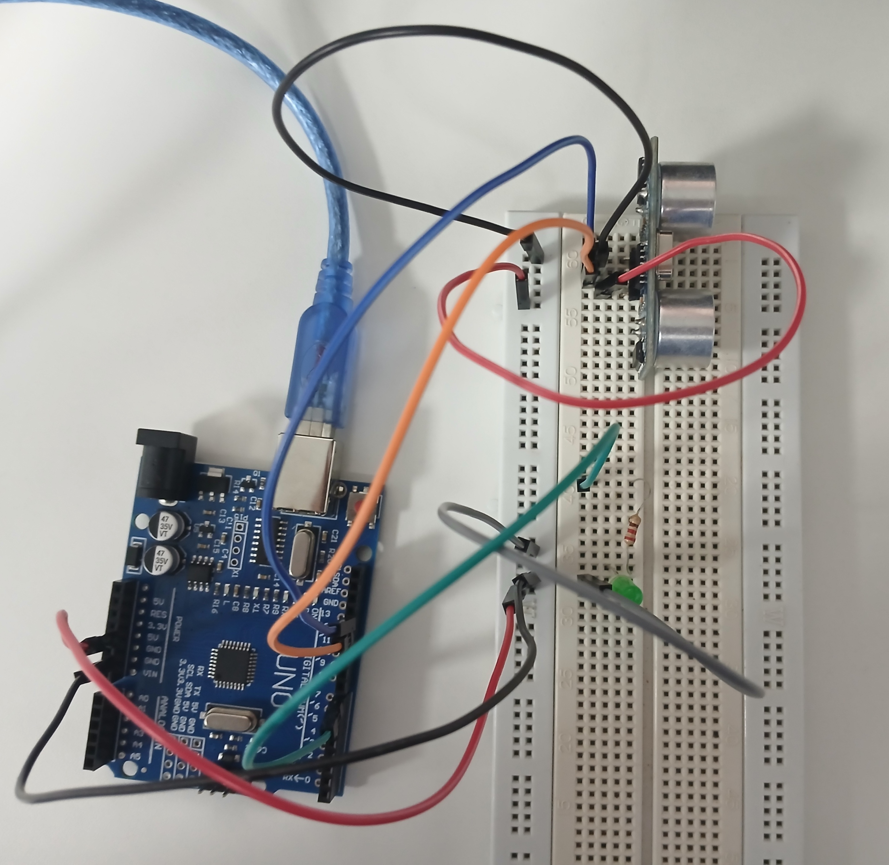
Circuito Físico em Funcionamento (1 Resistor, 1 Sensor Ultrassônico e 1 LED) - Se detecta um objeto, acende o LED (Início de detecção - 20 cm / Fim de detecção - 200 cm)
Sensor de cor
Definição:
Um sensor de cor é um dispositivo fotoelétrico que detecta, analisa e identifica cores em objetos, emitindo luz (geralmente branca ou RGB) e medindo a intensidade da luz refletida nas faixas de vermelho, verde e azul (RGB).
Ele compara a luz recebida com valores de referência pré-programados para classificar, separar ou inspecionar materiais.
Imagem:
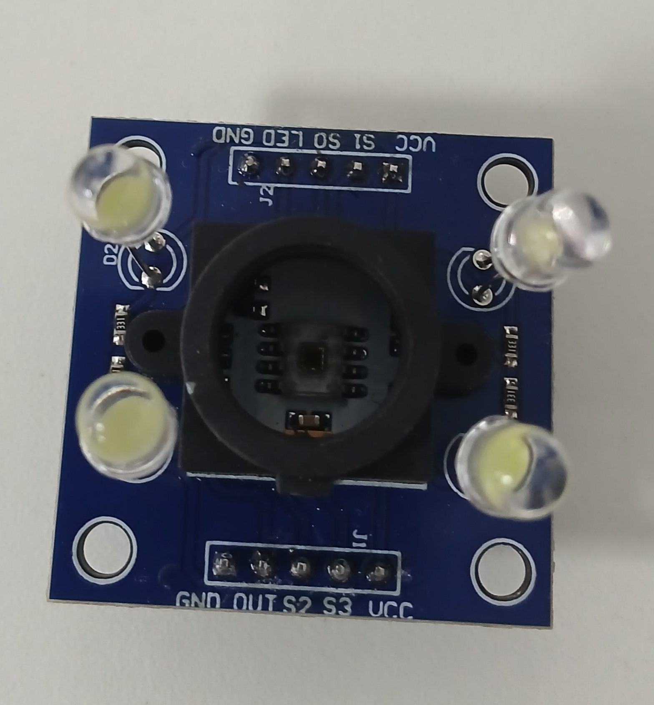
Sensor de vibração
Definição:
Um sensor de vibração é um dispositivo que detecta movimentos, choques ou oscilações mecânicas em um objeto ou superfície.
Ele converte essas vibrações em sinais elétricos, permitindo identificar impactos, movimentos ou variações no ambiente.
Imagem:
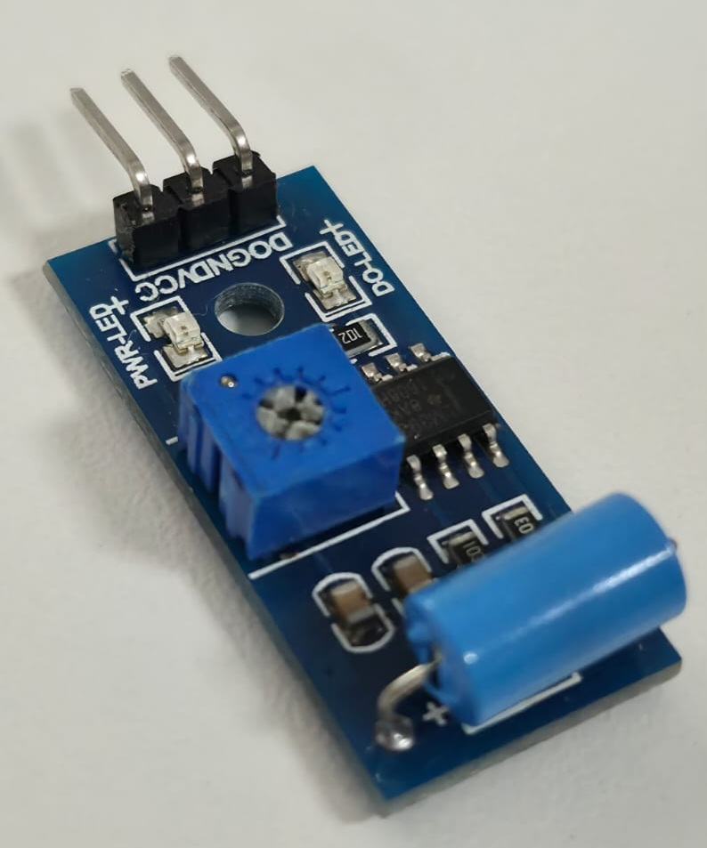
Sensor de luminosidade LDR
Definição:
Um sensor LDR é um dispositivo fotoelétrico cuja resistência elétrica varia de acordo com a intensidade da luz incidente.
Ele diminui sua resistência com o aumento da luz e a aumenta com a diminuição da luz ou no escuro, sendo utilizado para medir níveis de luminosidade.
Imagem:
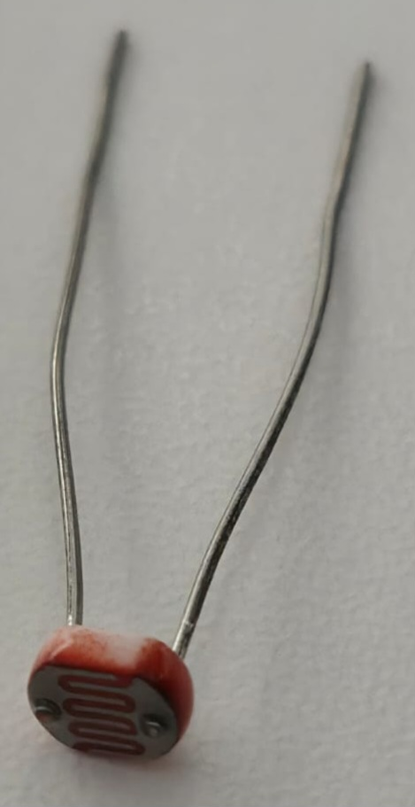
Sensor NTC / PTC
Definição:
• NTC (Negative Temperature Coefficient):
É um termistor, ou seja, um componente eletrônico cuja resistência elétrica diminui à medida que a temperatura aumenta. São amplamente usados em termostatos, ar-condicionado e eletrônicos para medição precisa de temperatura (-50°C a 150°C) e proteção térmica.
Imagem Sensor NTC:
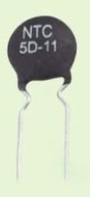
• PTC (Positive Temperature Coefficient):
Um PTC é um termistor, ou seja, um componente eletrônico cuja resistência elétrica aumenta à medida que a temperatura aumenta. Ele é amplamente utilizado em proteção de circuitos, aquecedores e dispositivos eletrônicos como elemento de segurança contra sobrecorrente e superaquecimento.
Imagem Sensor PTC:
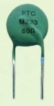
Circuito Físico - Ponte de Wheatstone (3 Resistores e 1 Termistor NTC)
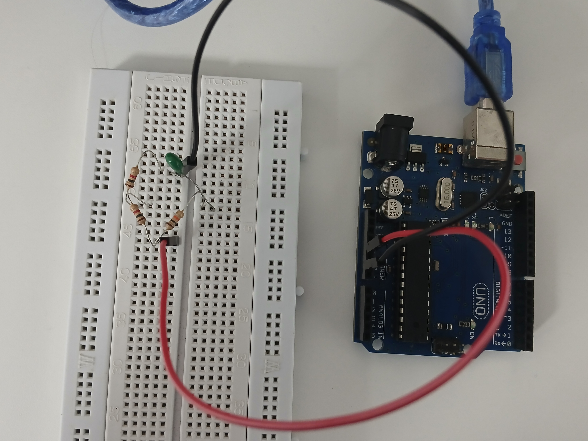
Medição no Circuito Físico - Ponte de Wheatstone (3 Resistores e 1 Termistor NTC)
Atuador relé
Definição:
Um atuador relé é um dispositivo eletromecânico que atua como um interruptor controlado eletricamente.
Ele permite ligar ou desligar circuitos de maior potência a partir de um sinal elétrico de baixa potência.
Imagem:
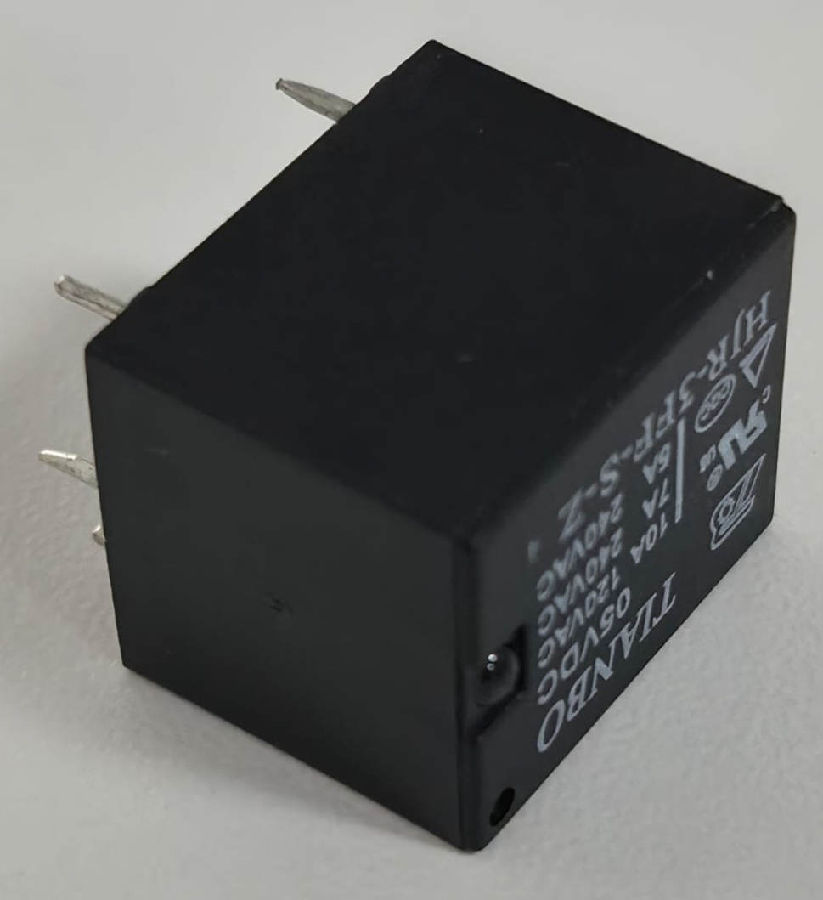
Trimpot
Definição:
Um trimpot é um resistor variável ajustável manualmente, utilizado para regular ou calibrar valores de tensão ou corrente em circuitos eletrônicos.
Ele permite ajustes finos e geralmente é usado em placas eletrônicas para calibração e configuração interna.
Imagem:
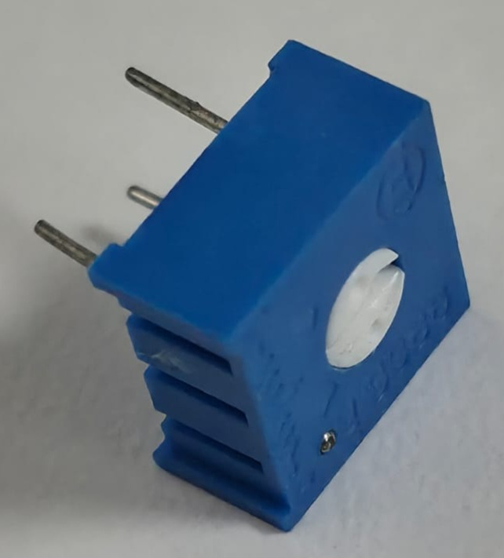
Push button
Definição:
Um push button (botão de pressão) é um componente eletromecânico que funciona como um interruptor momentâneo.
Ao pressioná-lo, ele permite a passagem de corrente elétrica (fechando o circuito) e, ao soltá-lo, uma mola interna o retorna à posição original, interrompendo a corrente (abrindo o circuito).
É muito utilizado em protoboards e projetos com Arduino.
Imagem:
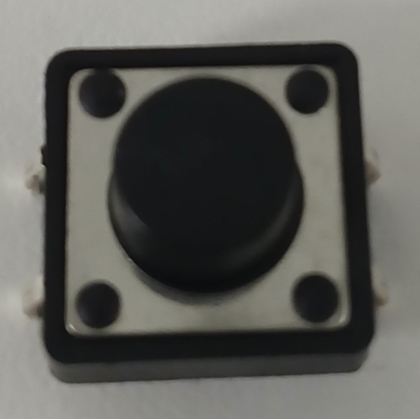